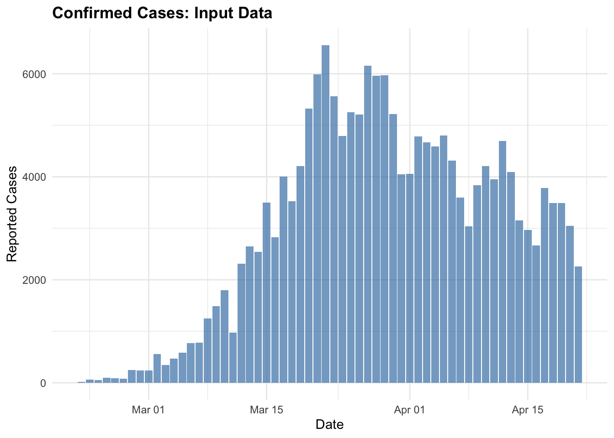

library(EpiNow2)
library(posterior)
library(bayesplot)
library(data.table)
library(scoringutils)
library(dplyr)
library(ggplot2)How to evaluate the ‘goodness of fit’ of an EpiNow2 model run
forecasting
EpiNow2
Bayesian Analysis
Reproduction numbers
R
Stan
Introduction
This is a quick guide on how to assess or evaluate the output of an EpiNow2 model run.
EpiNow2 uses a Stan backend
{EpiNow2} uses Stan in the backend for model specification, fitting, and inference.
This means that the model fit can be assessed using the same tools and techniques used for any Stan model. The EpiNow2 package provides a convenient interface to run the models, but the underlying model is a Stan model.
The returned fit object is either a <stanfit> or CmdStanModel object, depending on the backend ({rstan} or {cmdstanr}) used. For example, you can use the {bayesplot} and {posterior} packages to visualize and summarize the model diagnostics.
Evaluating or assessing an {EpiNow2} model fit requires a holistic approach involving evaluating the MCMC diagnostics as well as the performance of the forecast against observed data. We will therefore proceed in that regard here.
Let’s start by setting up and running an example model, assessing the MCMC diagnostics, and then evaluating the forecast performance.
Running an example model
Input preparation
This will involve: loading required packages, setting up the model parameters, and running the model.
# Set number of cores for parallel processing.
options(mc.cores = min(4, parallel::detectCores() - 1))
# Set example generation time, incubation period, and reporting delay. In practice, these should use estimates from the literature or be estimated from data.
generation_time <- Gamma(
shape = Normal(1.3, 0.3),
rate = Normal(0.37, 0.09),
max = 14
)
incubation_period <- LogNormal(
meanlog = Normal(1.6, 0.06),
sdlog = Normal(0.4, 0.07),
max = 14
)
reporting_delay <- LogNormal(mean = 2, sd = 1, max = 10)
# Use example case data.
reported_cases <- example_confirmed[1:60]
# Plot the data
cases_plots <- ggplot(reported_cases, aes(x = date, y = confirm)) +
geom_col() +
labs(title = "Confirmed cases", x = "Date", y = "Cases") +
theme_minimal()
cases_plots
Fitting the model
Estimate Rt and nowcast/forecast cases by date of infection.
out <- epinow(
data = reported_cases,
generation_time = gt_opts(generation_time),
rt = rt_opts(prior = LogNormal(mean = 2, sd = 0.1)),
delays = delay_opts(incubation_period + reporting_delay)
)Logging threshold set at INFO for the name logger
Writing EpiNow2 logs to the console and:
'/var/folders/vr/dn4r1_zj417drd1zr9301trw0000gp/T//RtmpMm2rHx/regional-epinow/2020-04-21.log'.
Logging threshold set at INFO for the name logger
Writing EpiNow2.epinow logs to the console and:
'/var/folders/vr/dn4r1_zj417drd1zr9301trw0000gp/T//RtmpMm2rHx/epinow/2020-04-21.log'.# Plot the model fit
plot(out)
Assessing model diagnostics
We’ll first extract the Stan fit object and compute diagnostics. The epinow() function returns a list of model outputs, including the Stan fit object. This is what we need to assess the model fit. Stan provides diagnostic metrics to assess the model fit, convergence, etc. which we’ll use to assess the model fit. The Stan ecosystem has a rich set of tools for diagnosing model fit, including the bayesplot and posterior packages. These tools provide a way to visualize and summarize the model diagnostics. For an indepth look at MCMC diagnostics, for example, see the bayesplot R package vignette on visual MCMC diagnostics. You can also do posterior predictive checks using the bayesplot package.
Diagnostics include:
- Divergent transitions. These should be minimized; ideally 0. Divergent transitions can be improved by tuning Stan controls like
adapt_delta,max_treedepth, andstepsizeinstan_opts(). If there are divergent transitions, increaseadapt_delta(e.g., 0.95 or 0.99). See an in‑depth explanation at https://mc-stan.org/learn-stan/diagnostics-warnings.html. - Rhat. These should be close to 1 indicating good mixing. Rhat values should be less than 1.05 (See
?rstan::Rhat). - Treedepth. This should be low; high values indicate potential issues with the model.
- ESS values. These should be high; low values indicate insufficient sampling. In particular, both bulk‑ESS and tail‑ESS should be at least ~100 per chain to ensure reliable posterior quantile estimates (see
?rstan::ess_bulk).
fit <- out$estimates$fit
np <- bayesplot::nuts_params(fit)
divergence_data <- subset(np, Parameter == "divergent__")
treedepth_data <- subset(np, Parameter == "treedepth__")
posterior_summary <- posterior::summarize_draws(
fit, c(posterior::default_convergence_measures(), "ess_basic")
) |> subset(variable != "lp__")
fit_ess_basic <- min(posterior_summary$ess_basic, na.rm = TRUE)
fit_ess_bulk <- min(posterior_summary$ess_bulk, na.rm = TRUE)
fit_ess_tail <- min(posterior_summary$ess_tail, na.rm = TRUE)
diagnostics <- data.table(
"samples" = nrow(np) / length(unique(np$Parameter)),
"max_rhat" = round(max(posterior_summary$rhat, na.rm = TRUE), 3),
"divergent_transitions" = sum(divergence_data$Value),
"per_divergent_transitions" = mean(divergence_data$Value),
"max_treedepth" = max(treedepth_data$Value),
"ess_basic" = fit_ess_basic,
"ess_bulk" = fit_ess_bulk,
"ess_tail" = fit_ess_tail
)
diagnostics[, no_at_max_treedepth :=
sum(treedepth_data$Value == max_treedepth)
][, per_at_max_treedepth := no_at_max_treedepth / samples]
knitr::kable(diagnostics)| samples | max_rhat | divergent_transitions | per_divergent_transitions | max_treedepth | ess_basic | ess_bulk | ess_tail | no_at_max_treedepth | per_at_max_treedepth |
|---|---|---|---|---|---|---|---|---|---|
| 2000 | 1.01 | 0 | 0 | 9 | 1325.989 | 1277.945 | 1109.327 | 837 | 0.4185 |
Evaluating forecast performance
Forecast performance can be evaluated by comparing the forecast of reported cases with the observed cases using Proper Scoring Rules(Gneiting and Raftery 2007; Carvalho 2016) such as the Continuous Ranked Probability Score (CRPS) and Weighted Interval Score (WIS). These are available via the scoringutils::score() function.
The scoringutils::score() function requires a dataset that contains at least the following columns:
date: the date of the forecastprediction: forecast valuestrue_value: the observed valuesquantile: If evaluating quantiles, the quantile of the forecasted values (e.g., median, lower and upper bounds), in ascending order.
Let’s extract and prepare the forecasts and corresponding observed cases for the evaluation.
EpiNow2’s epinow() function returns a list of model outputs in the raw and several summarised formats for various use cases. In particular, there are time series of “infections”, “reported_cases”, “growth_rate”, and “R”, all grouped into “estimate”, “estimate based on partial data”, and “forecast”.
Here, we’re interested in the “forecast” type of the “reported_cases” variable, including the median and quantiles (lower and upper bounds).
# Extract the forecasts
forecasts <- out$estimates$summarised[variable == "reported_cases"][type == "forecast", ] %>%
select(-c(mean, sd, variable, strat, type))Let’s also extract the corresponding subset of the observed data.
# Extract observed cases for the same period
obs_data <- example_confirmed[date >= min(forecasts$date) & date <= max(forecasts$date)]Now, let’s combine the extracted forecasts with the observed data and clean up the quantiles into a format suitable for use with scoringutils. We will be cleaning them up because the forecasts data.table labels the quantiles as lower_20, upper_20, etc., where the number indicates the quantile level (e.g., 50% for the median), but that is not compatible with scoringutils.
# Combine forecasts with observed cases
eval_dt <- merge(forecasts, obs_data, by = "date")[, true_value := confirm][, confirm := NULL]
# Melt the data to long format
cols_to_melt <- c("median", grep("^(lower|upper)_", names(eval_dt), value = TRUE))
eval_long <- melt(
eval_dt,
id.vars = setdiff(names(eval_dt), cols_to_melt),
measure.vars = cols_to_melt,
variable.name = "prediction",
value.name = "value"
)
# Prepare the evaluation data
eval_long[, quantile := fifelse(
prediction == "median", 0.5,
fifelse(
grepl("^lower_", prediction),
(1 - as.numeric(sub("lower_", "", prediction)) / 100) / 2,
fifelse(
grepl("^upper_", prediction),
(1 + as.numeric(sub("upper_", "", prediction)) / 100) / 2,
NA_real_
)
)
)][, prediction := value][, value := NULL]Warning in fifelse(grepl("^lower_", prediction), (1 - as.numeric(sub("lower_",
: NAs introduced by coercionWarning in fifelse(grepl("^upper_", prediction), (1 + as.numeric(sub("upper_",
: NAs introduced by coercion# Sort the data by quantile
setorder(eval_long, quantile) %>%
head(10) date true_value prediction quantile
<Date> <num> <num> <num>
1: 2020-04-22 2729 1526.00 0.05
2: 2020-04-23 3370 1623.90 0.05
3: 2020-04-24 2646 1911.95 0.05
4: 2020-04-25 3021 1599.00 0.05
5: 2020-04-26 2357 1701.95 0.05
6: 2020-04-27 2324 1507.00 0.05
7: 2020-04-28 1739 1237.85 0.05
8: 2020-04-22 2729 1895.00 0.25
9: 2020-04-23 3370 2056.75 0.25
10: 2020-04-24 2646 2420.00 0.25Now we can use the scoringutils package to compute and summarise the scores. By default, a range of scores will be computed, including the interval_score, dispersion, underprediction, overprediction, coverage_deviation, bias, and ae_median.
# Mainly uses the scoringutils package
scored_scores <- eval_long[, quantile_level := quantile][, quantile := NULL][, model := "EpiNow2"] |> # align names to scoringutils preference
as_forecast_quantile(observed = "true_value", predicted = "prediction") |>
score() %>%
summarise_scores()Warning: ! Computation for `interval_coverage_90` failed. Error: ! To compute the
interval coverage for an interval range of "90%", the 0.05 and 0.95 quantiles
are required.knitr::kable(scored_scores, digits = 3)| model | wis | overprediction | underprediction | dispersion | bias | interval_coverage_50 | ae_median |
|---|---|---|---|---|---|---|---|
| EpiNow2 | 313.898 | 33.963 | 150.892 | 129.043 | -0.143 | 0.571 | 444.286 |
Interpretation of scores
The table above provides a summary of the forecast performance by metrics. Note that it is not difficult to interpret the scores currently as they are not relative to other models. A proper comparison can only be done against other models.
Comparing against a baseline model
A common practice is to have a baseline model (Stapper and Funk 2025), such as a naive model, and compare the scores of your model against it.
Future updates
In future updates, I will explore more advanced techniques for model diagnostics and evaluation, including posterior predictive checks, cross-validation, and more using packages like loo, shinystan, and bayesplot
Resources
As this is a simple and basic guide, I’ll direct you to the following resources for more in-depth information on model diagnostics and forecast evaluation.
- Stan’s guide on How to Diagnose and Resolve Convergence Problems
- Understanding, evaluating, and improving forecasts of infectious disease burden open course.
- scoringutils R package documentation
- scoringRules R package documentation
References
Carvalho, Arthur. 2016. “An Overview of Applications of Proper Scoring Rules.” Decision Analysis 13 (4): 223–42.
Gneiting, Tilmann, and Adrian E Raftery. 2007. “Strictly Proper Scoring Rules, Prediction, and Estimation.” Journal of the American Statistical Association 102 (477): 359–78.
Stapper, Manuel, and Sebastian Funk. 2025. “Mind the Baseline: The Hidden Impact of Reference Model Selection on Forecast Assessment.” medRxiv, 2025–08.